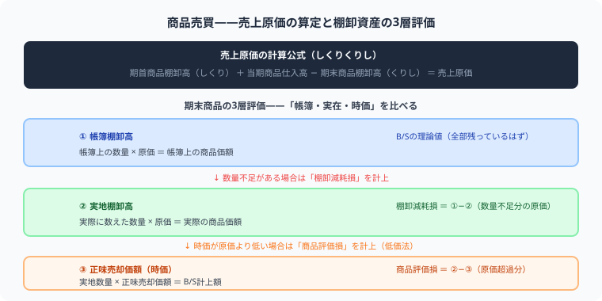

こんにちは、大谷です！
実は、今回紹介する商品売買の「棚卸減耗損」と「商品評価損」の同時計算は、僕が大学の講義内で初めて解いたとき、「うわっ、なんじゃこりゃ……計算の数字が全然合わん！」と頭を抱えて激しくつまずいた大嫌いな論点でした（笑）。
だからこそ、当時の僕と同じようにひっかけ罠にハマって悩んでいる皆さんに、どこよりも直感的にゲーム感覚のパズルとして理解してもらえるよう、僕なりの攻略法をお届けします！
また、モチベーション維持のために、記事の末尾のほうにある【いいねボタン】をポチッと押してもらえると、めちゃくちゃ励みになりますしすごく嬉しいです！
商品売買は簿記3級の延長ですが、2級では決算整理・財務諸表作成の中で正確に処理できるかが問われます。特に売上原価、棚卸減耗損、商品評価損は第3問で差がつきます。

期末商品は「帳簿・実在・時価」の3つを比べて評価します。数量が足りないなら棚卸減耗損、時価が原価を下回るなら商品評価損を計上します。
売上原価とは、当期に販売した商品の仕入原価です。期首商品に当期仕入を足し、期末商品を差し引いて計算します。
| 項目 | 意味 |
|---|---|
| 期首商品棚卸高 | 前期から繰り越された商品 |
| 当期商品仕入高 | 当期に仕入れた商品 |
| 期末商品棚卸高 | 当期末に残っている商品 |
売上原価 = 期首商品棚卸高 + 当期商品仕入高 - 期末商品棚卸高
三分法では、期首商品を仕入へ振り替え、期末商品を繰越商品へ戻します。「しくりくりし（仕入→繰越商品→繰越商品→仕入）」の語呂で覚えるのが定番です。
たとえば期首商品が10,000円、期末商品が15,000円の場合、具体的な仕訳はこうなります。
| 借方 | 金額 | 貸方 | 金額 |
|---|---|---|---|
| 仕入 | 10,000 | 繰越商品 | 10,000 |
| 繰越商品 | 15,000 | 仕入 | 15,000 |
帳簿上は100個あるはずなのに、実地棚卸で98個しかない場合、2個分が棚卸減耗損です。盗難、破損、紛失などで数量が減ったイメージです。
数量は残っていても、商品の時価が原価より下がった場合は商品評価損を計上します。簿記では、棚卸資産を原価と時価の低い方で評価します。
| 損失 | 原因 | 見るポイント |
|---|---|---|
| 棚卸減耗損 | 数量不足 | 帳簿数量と実地数量の差 |
| 商品評価損 | 価値下落 | 原価と正味売却価額の差 |
3級では商品売買の基本仕訳が中心でしたが、2級では決算整理での棚卸資産評価が加わります。具体的には、帳簿数量と実地数量の差額を棚卸減耗損、原価と時価の差額を商品評価損として計上する処理が2級固有の論点です。財務諸表の表示箇所まで合わせて覚える必要があります。
棚卸減耗損は「数量が足りない」場合に計上する損失です。帳簿上100個あるはずなのに実地棚卸で98個しかなければ2個分が棚卸減耗損になります。一方、商品評価損は「数量はあるが価値が下がった」場合で、原価より時価（正味売却価額）が低いときに差額を計上します。
「期首商品 ＋ 当期仕入 ー 期末商品 ＝ 売上原価」という公式を覚えましょう。よくある間違いは期末商品を足してしまうことです。「冷蔵庫に残った食材は売れていないから原価に入れない」とイメージすると間違えにくくなります。三分法の決算整理仕訳とセットで練習してください。
この記事が少しでも参考になったら……
僕の執筆のモチベーション維持のために、この下にある【いいねボタン】をポチッと押してもらえると、めちゃくちゃ嬉しいです！ 皆さんの一押しが、次の記事を書く力になります。